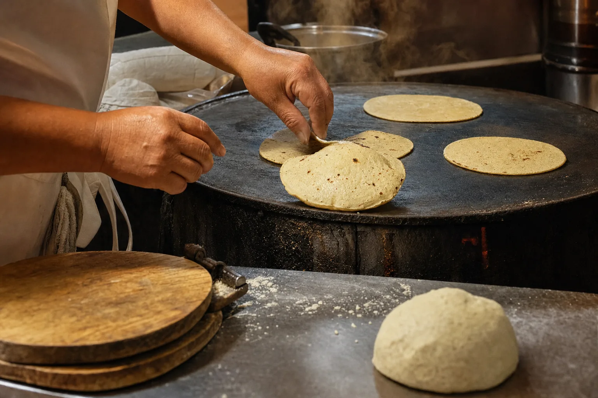
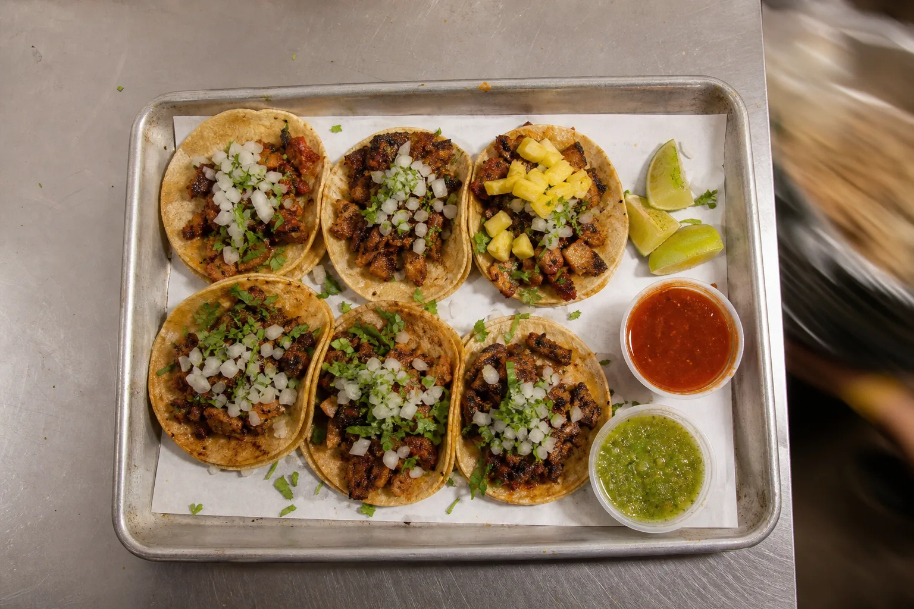
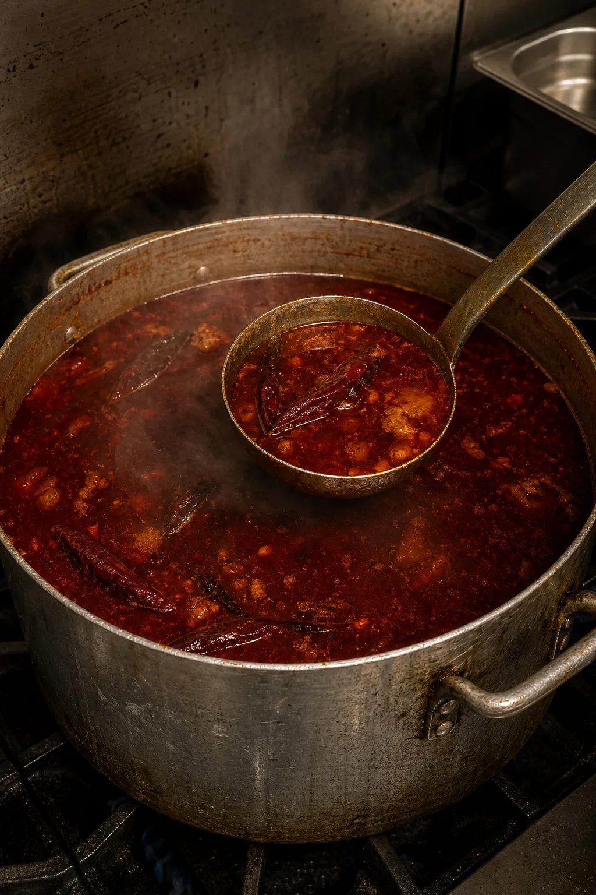
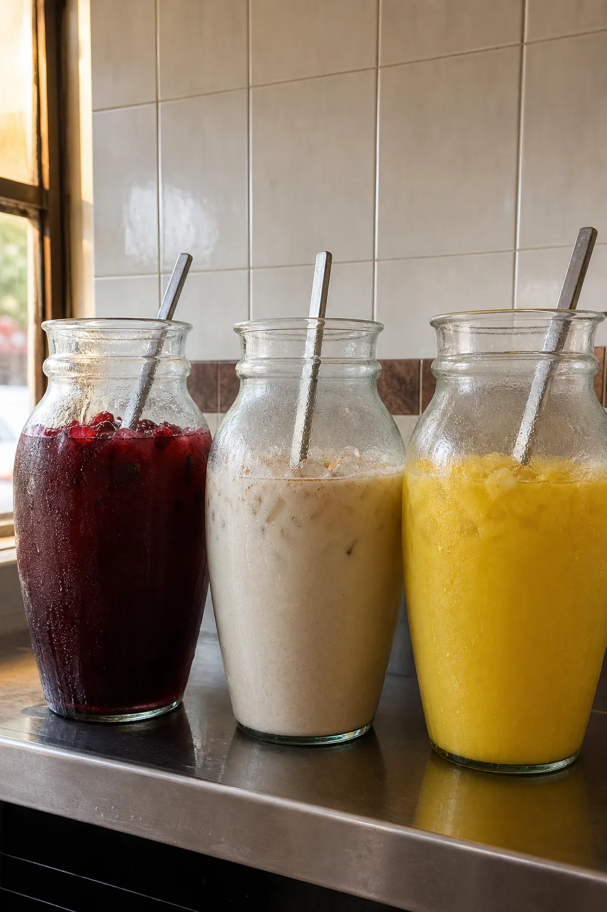

Handmade corn tortillas, seven days a week, on Nokesville Road in Bristow. Tacos, gringas, pupusas, soups, breakfast, and meat sold by the pound.
On handmade corn tortillas. Onion and cilantro unless you say otherwise.

Meat by the pound, no tortillas. Tortillas are $1.45 for three, or $1.85 for the thicker ones.

Menudo, pozole de puerco, pozole verde, sopa de res and sopa de gallina, $16 to $18, served with handmade tortillas or tostadas. Goat comes out Saturday and Sunday. Call ahead for the chivo, because it goes.
With curtido and salsa. Curtido and salsa are also sold by the tub.
Breakfast from ten in the morning, every day.

Made here. Large sizes $7.25.
Pickup runs about twenty minutes. For goat, pound orders and the weekend soups, calling is faster than any app.
An unsolicited design concept for Taqueria Rancho El Milagro, prepared by Ohtari Labs. This is not their website.